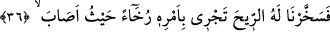

Şayet, Süleyman’ın (a.s.) “benden sonra kimsenin ulaşamayacağı…” ifâdesi,
Peygamber Efendimiz’e de şâmil olup olmadığı sorulacak olursa, şöyle cevap veririz:
Sûret bakımından şâmil olmaktaysa da bu Peygamberimiz’in böylesi bir hükümranlığa
kesb-i istihkak edememesinden değil, son derece âlî bir himmete sâhip olmasından ve
kadr ü kıymetinin büyüklüğünden dolayıdır. Çünkü kendisine bundan çok daha büyük
bir hükümranlık teklifi yapılmış olduğu halde o bunu kabul etmemiş ve “Fakirlik benim
için iftihâr kaynağıdır”[31] buyurmuştur.
Fakat işin esas mânâ cephesine bakılacak olursa, mezkûr ifâde Peygamberimiz’e
şâmil değildir; zira o şöyle buyurmuştur: “Ben peygamberlerden,” yâni peygamberlerin
tamamından “altı haslet sâyesinde üstün kılınmış bulunuyorum.” (Müslim, Mesâcid 5)
[32]
Kuşkusuz ki sûrete dayalı hükümranlığa diğer peygamberler içinden sadece kendisi
sâhip kılınmış olmasına rağmen Süleyman (a.s.), Ülü’l-’Azm (büyük fedakârlık ve
direnç sâhibi) peygamberlerden tek birinin derecesine bile ulaşamamıştır. Öyleyse -
Süleyman’ın (a.s.) hükümranlığının hiç şüphesiz sûret yönünü oluşturduğu- gerçek
hükümranlığın mânâ yönü, Peygamberimiz’e (s.a.) özgü kılınmış ve “Allah’ın sana
karşı fazl u ihsânı gerçekten büyük olmuştur” ifâdesiyle (en-Nisâ 4/113) anlatılmış
olan üstünlüklere dâhil demektir. Esasen Allah Teâlâ, Hz. Peygamber’e (s.a.),
Süleyman’ın (a.s.) istemiş olduğu hükümranlığın sûret ve mânâ yönünü ona verip
imtihan ettiğinden çok daha fazlasını ihsân buyurmuştur. Hem de kendisine verdiği
değerden ve sâhip olduğu vakârdan dolayı, sûrete dayalı hükümranlıklarda yaşanan
zahmet ve imtihan olgusuna yer vermeksizin (et-Te’vîlâtü’n-Necmiyye).
36. Bunun üzerine biz de, istediği yere onun emriyle kolayca giden rüzgârı onun
emrine verdik.
“Bunun üzerine biz de, istediği yere onun emriyle kolayca giden rüzgârı onun
emrine verdik” âmâde kıldık. Yâni yapmış olduğu duâya icabet ederek rüzgârı
kendisinin hiçbir emrine karşı gelmeyen mutî bir varlık hâline getirdik. Böylece
Süleyman (a.s.), imtihan edilmezden önceki durumuna tekrar kavuşmuş oldu ki bu da
Allah’a yönelmesi sebebiyle gerçekleşmiştir.
Ebû Amr bu rüzgârın sabâ rüzgârı olduğunu belirtir.
et-Te’vîlâtü’n-Necmiyye’de de belirtildiği üzere, burada Süleyman’ın (a.s.) o hızlı
koşan görkemli atlara Allah’ın rızâsını kazanmak için yapacağını yapmasından sonra,
Allah’ın da bunların yerine kendisine, “sabah gidişi de bir aylık mesafe; akşam
dönüşü de bir aylık mesafe olan bir rüzgâr” (Sebe’ 34/12) gibi bir bedel ihsân
ettiğine işâret edilmektedir. Bu yorum ayrıca Keşfü’l-esrâr’dan iktibasla yukarıda